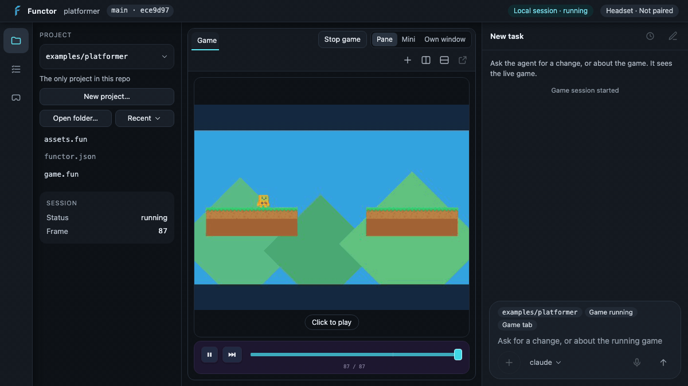
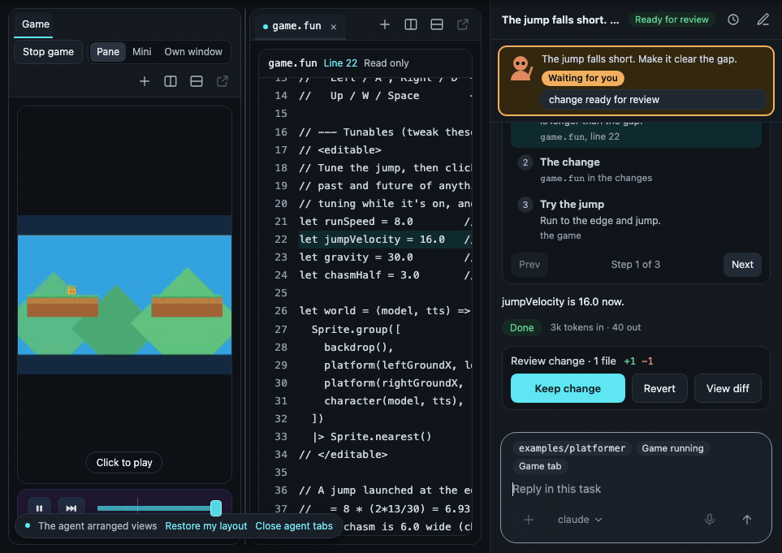
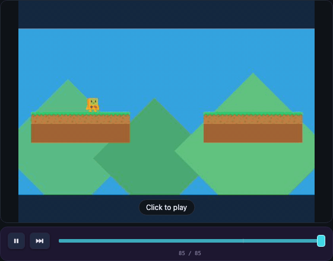

The desktop app
Run functor in a project and it opens a workbench: your game on one side, a
coding agent on the other. The agent reads the running game, edits the code, and the
game reloads in place. You rewind to check, then keep the change or revert it.
A preview. macOS first, built from source, and not in the prebuilt
download. This page documents what is on main today; parts marked
New are merged but have not been lived in yet.
Tell us what breaks.

Build and open it
You need the same tools as the CLI build (Rust, Node 22,
wasm-pack), plus an agent on your PATH: Claude Code (claude) or Codex
(codex). From a checkout of the repository:
npm run build # everything, the app built in npm run app -- -d examples/primitives # rebuild what changed, open it npm run package:app # Functor.app
After npm run build, bare functor opens the app; so does
functor app. Its games and the agent's tools run on that same
functor, so they always match it:
./target/release/functor -d examples/primitives
The window is macOS only for now, and elsewhere npm run build builds the
CLI alone: add the app beside it with npm run build:app, and
functor finds functor-app next to itself, then in
FUNCTOR_APP_BIN, then on PATH. Anywhere without a window, or
over SSH, run it without one and open the printed URL in a browser:
./target/release/functor app -d examples/primitives -- --headless # [functor-app] listening on http://127.0.0.1:<port>/#token=…
The token is new on every launch, so open that exact URL. Arguments after
-- go to the app.
Open a project
With no -d, the app opens the current directory if it is in or holds a
project, else your most recent project.
-
Any folder. The project picker at the top of the Explorer has
Open folder… (also File → Open Folder, ⌘O). A folder, or the git
repository around it, can hold several projects (each a directory with a
functor.json); the picker switches between them. - Recent. The picker and File → Open Recent list recent projects. A project whose folder is gone shows as missing; clicking it removes it from the list.
-
New project. New project… (⇧⌘N) asks for a name, a parent
folder and a template: the ones
functor init --listprints. Outside a git repository it offers Track changes with git. Describe the game and that text becomes the project's first task.
Keep and Revert need git. In a folder that is not a git repository the app still runs the game and the agent, but changes are not tracked.
The workbench
A rail on the left switches the side pane between Explorer, Tasks and Devices. The canvas in the middle holds panes of tabs. The chat dock on the right is the conversation with the agent.
The game view
Opening a project starts its game paused on the first frame. Press Play on the transport bar to run it, then click the view to play: keys and mouse go to the game until you press Esc. While paused, input is not forwarded. Stop game ends the process; Start game brings it back, paused on its first frame again.
The control beside Start/Stop chooses where the game shows:
| Placement | What it does |
|---|---|
| Pane | A Game tab in a pane, beside your code. |
| Mini | A card floating over the canvas. Drag it to a corner, resize it from its handle, or dock it back. It is the same running game as Pane. |
| Own window | The game in its own OS window. It has no transport bar there, so it runs at once instead of opening paused. Switching to or from it restarts a running game. |
| Headset | Offered while a paired headset is connected. Runs the game on the headset. |
The view never forwards Esc, so a game that uses Esc needs its own window.
Panes and tabs
A tab is the Game, a file, a task's Changes, or a task's page. Drag tabs between panes; the buttons at the end of a tab bar open a view, split right, and split down. Open a view here also holds Reset layout. The layout is saved per project.
| Key | Does |
|---|---|
| ⌥W | Close tab |
| ⌥] / ⌥[ | Next / previous tab |
| ⌥\ | Split right |
| ⌥O | Next pane |
The shortcuts are off while you type in a field and while the game has your input.
The Explorer and files
Under the project picker, the Explorer lists the project's files. Click one to open
it in the focused pane; Alt-click (or the side button) opens it beside. Files open
read-only, with line numbers and syntax highlighting for
.fun, .funi and .json, and re-read every couple
of seconds so the agent's edits appear. Edit in your own editor: the game hot-reloads
on save either way.
Ask for a change
Type in the composer and press Enter (Shift+Enter for a new line). The first message starts a task: one conversation, and at most one change you keep or revert. Later messages continue it; New task starts another. The Stop button ends a run.
-
Agent picker. Lists the agents found on your
PATH(claude,codex). A task keeps the agent it started with. - Chips. Above the text: the project, whether a game is running, and the tab you have focused. They show what the agent can see: it starts in your project, is told whether the game is running, and can look up which tab you have focused.
-
Mic. New Shown when the app was
built with speech-to-text (
npm run buildon macOS is). Click to record, click again to transcribe on this machine. The words land in the draft; nothing is sent until you send it. Not yet checked with a real microphone in the window.
What the agent can see and do
Each run gets a tool server attached to your running game. It can:
- read the live model and clock, the scene, and a paused trace;
- press keys, move and click the mouse, send UI events;
- step frames, resume, and rewind;
- capture a frame as a picture;
- read which tab, file and session you are looking at;
- read the language guide and search the API reference;
- edit files in the git repository that holds the open folder (or the folder itself, outside git);
- open a file range, a diff or the game beside your work, and step you through its change when it finishes.
These are the same tools functor mcp serves,
minus the one that runs arbitrary JavaScript. The agent never moves your cursor or
closes your tabs. While it has arranged views, a bar offers
Restore my layout and Close agent tabs; turn the behaviour off with
Let the agent arrange views in the Open a view here menu.

Agent cards and the Tasks pane
Each working task has a card, in the Tasks pane and in the chat dock: a small
character (round for Claude, angular for Codex), what it is doing right now
(reading weapons.fun
), and a stance: Thinking, Working, Waiting for you, or
Failed. Click a card to open its task.
The Tasks pane groups tasks as Waiting on you, Ready for review and In progress. A task's page shows what the agent was given, its steps, its change and its token usage per run.
Time
The transport bar sits under the game. It is the web player's timeline, on your native game.

- Pause / Play and Step one frame.
- Drag back. Drag along the rail, or focus the playhead and use the arrow keys, to show an earlier recorded frame. Playing or stepping from there carries on from that frame.
- Marks. Ticks on the rail mark where a key or button went down or up and where the code hot-reloaded. Hover one to read it; click to jump there.
- Extrapolate (🔮). Draws where the game goes next, and where it came from, into the game's picture.
- The peek. When an edit lands while the game is paused and Extrapolate is off, the path shows by itself for a moment, so you see what the new code does without pressing anything.
Decide
When a run leaves a change, the task is Ready for review. The chat ends in a card with the short version and Keep / Revert; Open the decision page opens the full one as a tab.
The decision page
| Part | What it shows |
|---|---|
| Size of the change | Lines added and removed, files, and the kinds of file touched. |
| The verdict | Approve at a glance or Look into this, with the reason. |
| Before and after | The predicted path under the old code and the new. |
| Summary | One short paragraph in plain, simple English. |
| Evidence | The checks that were run, each passed or failed, and the predicted path. |
| Things to note | What was not verified, what was assumed, side effects. |
Tabs go deeper: Highlights (the walkthrough), Captures (the path pair, large) and Changes (the diff).
The verdict rule
The app decides the verdict, not the agent, and the rule is fixed. Approve at a glance needs all of:
- no check failed, and the report says there is nothing to note;
- only game logic changed: one file, at most 20 changed lines;
- some evidence: a check that passed, or the predicted path shown.
Anything else is Look into this, with the first rule it missed as the reason. It is advice on how deep to read. Keep and Revert work either way.
The separate review
By default the report is not written by the agent that made the change. When a
change waits for you, a second, read-only agent run reads the diff
and writes the summary, evidence and notes. The page says
Prepared by a separate review
when it did, and
Preparing the summary…
while it works; you can Keep or Revert without waiting.
Review on / off, beside the agent picker, controls it per project, with an optional model and extra instructions. Off, the working agent's own report is shown. Reviews always run on Claude Code, whichever agent made the change, on a cheaper model unless you name one, and stop at 300,000 input tokens or three minutes.
The predicted path
When a task starts, the app keeps the game's moment: its frame and recorded inputs. When the change is ready, the old and the new version of the project are copied to a temporary folder and each replays that moment in its own hidden game session; the page shows both with the path drawn. Your running game is only read, and your working files are not changed by it.
A change that touches none of the project's top-level .fun,
.funi or functor.json files gets no path at all. Otherwise
it shows nothing, and says why, when:
- the change moves nothing on the path;
- no game was running when the task started;
- the game had run longer than its recorded inputs reach back (about 15 s);
- the game made network requests, which a replay would send again;
- the camera differs between the old and new code at that moment.
Keep or Revert
Keep change leaves your files as they are and closes the review. Revert puts every file the task changed back as it was before the task started, undoing any other edits made to those files since; it asks first. Neither commits, stages or touches your branches.
Headset (Meta Quest) New
Everything in this section is merged and passes automated tests against a Quest 3 that drive its controllers. Nobody has used it day to day with the headset on yet. Tell us what breaks.
The headset needs the Functor runtime app (functor_runtime_oculus.apk,
built from this repository) and the same Wi-Fi as your computer.
Pair
Two ways. Both end with the headset connecting over Wi-Fi by itself.
- By matching code. In the headset, open Functor and hold the left menu button for a second. It finds your computer and shows a six-digit code. The desktop shows a prompt with the same code. Press A in the headset if they match, then Allow on the desktop. Nothing to type.
-
Over the cable. Plug the headset in with USB (needs
adb, USB debugging allowed, and a debug build of the headset app, whichnpm run build:oculus:apkmakes). Its card in Devices offers Pair over the cable: one click, no code.
Forget this headset on its card removes the pairing.
Connection states
The pill in the title bar and the card in Devices use the same words.
| State | The fix |
|---|---|
| Not paired | Pair, as above. |
| Wants to pair | Check the code matches, then Allow (or Not mine). |
| Away | Put the headset on and open Functor. It reconnects by itself. |
| Connected | Nothing. The card shows link, latency, battery and what is running. |
| Out of date | Update whichever side the card names: the headset's app, or Functor on the computer. |
| Unreachable | Paired but not answering. Check both are on the same Wi-Fi. |
Run the game on the headset
While a headset is connected, the placement control gains Headset.
Choosing it moves the game there over Wi-Fi: no cable, no adb forward.
Saving a file reloads it in the headset. The Game tab shows the frame and clock; the
transport bar pauses, steps and seeks it. The agent's tools reach the game on the
headset too. Run it on this computer brings it back, paused on the first
frame.
There is no live picture of the headset on the desktop yet, and no Extrapolate.
Talk to the agent from the headset
With the game placed on the headset, hold the right thumbstick click and speak; release to send, or press B to cancel. A short click still goes to the game. The clip is transcribed on your computer. It steers the task that is running, or starts a new one.
A toast in the headset follows it:
| Toast | Means |
|---|---|
| Microphone | Allow the microphone in the headset, then hold again. |
| Listening… | Recording, with a level meter. Clips stop at one minute. |
| Sending… / Heard | The clip reached the desktop; the words it heard appear. |
| Working… | The agent is on it. |
| Reloaded | The game in the headset reloaded with the agent's edit. |
| Failed / Not sent | With the reason on the second line. |
| Not connected | The headset is paired but the link is down. See the states above. |
Voice needs an app built with speech-to-text. It has been tested with a tone in place of the microphone, not yet with a person speaking.
Privacy and safety
- It runs on your machine. The app, the game and the tool server are local processes. There is no Functor account and no Functor server.
- The agent is your own. The app starts the Claude Code or Codex you already have installed. Whatever that sends to its provider in a terminal, it sends here.
- It uses your own agent settings, today: your instructions, hooks, MCP servers and allow rules load as they do in your terminal. The app adds two things: edits inside the repository are accepted without asking, and anything else that no rule allows is denied rather than asked. Shell commands differ by agent: Claude Code runs only the ones your own rules allow; Codex runs any, inside its sandbox on the repository. The separate review is the exception: it loads none of your settings and cannot write.
-
The UI listens on loopback only (
127.0.0.1), and the socket that drives the app needs a random token made fresh on each launch. -
Headset pairing listens on your network. A second listener on a
free port, announced by mDNS, speaks only the pairing and link protocol. A device
that has not paired can do nothing but ask, which shows you a prompt. Turn it off
with
--no-device-link:functor app -d <project> -- --no-device-link
-
Speech-to-text is local. Audio is transcribed on this machine
(whisper.cpp) and dropped; headset clips are kept, under
~/.functor/app/voice, only if you setFUNCTOR_APP_KEEP_AUDIO. The only download is the model itself, once, on first use: about 148 MB, checked against its hash. -
Where data lives. Tasks, transcripts, layouts, pairings and the
snapshots behind Revert are in
~/.functor/app(FUNCTOR_APP_HOMEoverrides). Speech models are in~/.functor/models(FUNCTOR_MODELSoverrides). The app keeps none of its own files in your repository, and your git history, index and stash are only read. What does change there: the agent's edits, and whatever running the game writes anyway (functor runregeneratesassets.funwhen assets change).
Cost
The app adds no charge of its own; a run spends your agent's tokens. What sets the bill is turns: every time the agent calls a tool and reads the result, the conversation so far is sent again. In our measurements with Claude a turn is about 35,000 input tokens (cached tokens included).
| Run | Tool calls | Input tokens |
|---|---|---|
| A question about the game's state | 1 | about 75k |
| A small edit, checked by playing | 6 to 13 | 170k to 260k |
| The separate review of that edit | — | 80k to 115k |
Output is small beside it: one to two thousand tokens per edit. These are single runs on the repository's own scenarios with one user's settings, so read them as a scale, not a quote. A task's page lists tokens in and out for each of its runs.
Measure it yourself from a checkout (it runs the debug builds of
functor and functor-app):
npm run metrics:app # replays recorded runs; spends nothing FUNCTOR_APP_LIVE=1 npm run metrics:app -- --live # the real agent; spends tokens
Troubleshooting
| You see | Do this |
|---|---|
functor-app not found (looked for …), or bare functor prints help |
On macOS build it in (npm run build); elsewhere build it beside
functor (npm run build:app), or point
FUNCTOR_APP_BIN at the binary.
|
| The functor CLI at … is older than this app, so games and the agent's tools cannot start. |
A separate functor-app found an old functor. Run the build
the message names (npm run build beside a release app,
npm run build:cli:debug beside a debug one), or start the app with
--functor <path>, then press Try again. The app built
into functor runs itself, so it never sees this.
|
the window is macOS-only for now; run with --headless |
functor app -d <project> -- --headless, then open the printed URL. |
| No session token — open the URL functor-app printed |
The page was opened without its #token=…. Use the full URL from the
terminal; it changes on every launch.
|
| claude is not available on this machine (or codex) |
Install that agent so its command is on PATH, then open the app
again. Reviews need Claude Code: with only Codex installed, turn
Review off.
|
| This folder is not a git repository, so changes are not tracked. | Run git init in it (or tick Track changes with git on a new project) to get Keep / Revert. |
| No predicted path: … | Expected in the cases above. For the next task, have the game running, near its start, when you ask. |
| The separate review did not finish: … | The page falls back to what it had. Keep and Revert still work; turn reviews off under Review on if it repeats. |
speech-to-text is not in this build of the app |
Rebuild with npm run build (macOS) or npm run build:app, which turn it on. |
| The device link is off, so headsets cannot find this computer. | Start the app without --no-device-link. |
| Plugged in, USB debugging not allowed | Put the headset on and choose Allow on its USB debugging prompt. |
| Plugged in, no Functor app | Install it over the cable: adb install functor_runtime_oculus.apk. |
| This headset is not running a game from the Functor app, so there is nothing to change. | Spoken into a headset the game is not on. Choose Headset as the game's placement first. |
What is next: the design notes are in the repository, as decisions and a plan. Building and testing the app itself is in DEVELOPMENT.md.